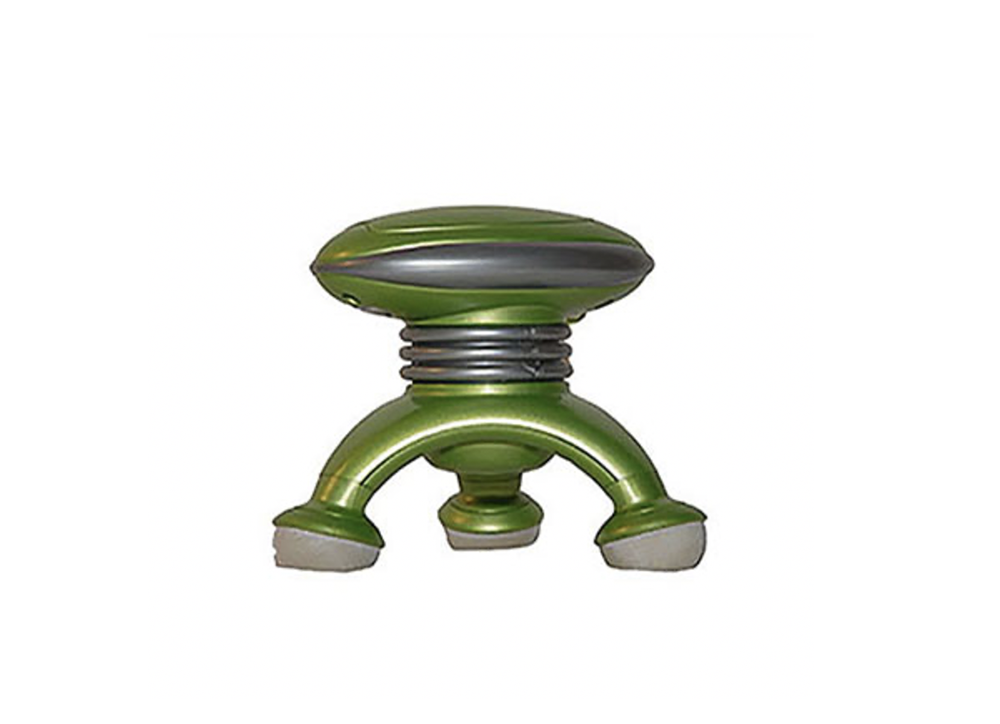

<!doctype html>
<html lang="en">

<head>
	<title>Princeton Baby Lab experiment</title>
	<meta charset="UTF-8">

	<script type="text/javascript" src="lib/vendors/jspsych-6.1.0/jspsych.js"></script>
	<link href="lib/vendors/jspsych-6.1.0/css/jspsych.css" rel="stylesheet" type="text/css" />

	<script type="text/javascript" src="lib/vendors/jspsych-6.1.0/plugins/jspsych-html-keyboard-response.js"></script>
	<script type="text/javascript" src="lib/vendors/jspsych-6.1.0/plugins/jspsych-image-keyboard-response.js"></script>
	<script type="text/javascript" src="lib/vendors/jspsych-6.1.0/plugins/jspsych-audio-keyboard-response.js"></script>
	<script type="text/javascript" src="lib/vendors/jspsych-6.1.0/plugins/jspsych-audio-button-response.js"></script>
	<script type="text/javascript" src="lib/vendors/jspsych-6.1.0/plugins/jspsych-fullscreen.js"></script>
	<script type="text/javascript" src="lib/vendors/jspsych-6.1.0/plugins/jspsych-call-function.js"></script>

	<script type="text/javascript" src="lib/vendors/jquery-2.2.0.min.js"></script>
	<!-- <script type="text/javascript" src="lib/jspsych-pavlovia-3.0.6.js"></script> -->

	<script type="text/javascript" src="js/order1_1.js"></script>
	<script type="text/javascript" src="js/jspsych-html-button-response.js"></script>
	<script type="text/javascript" src="js/jspsych-video-keyboard-response-mod.js"></script>
</head>

<body>
	<script type='text/javascript'>

		/* create timeline */
		var timeline = [];

		/* init connection with pavlovia.org */
		// var pavlovia_init = {
		// 	type: "pavlovia",
		// 	command: "init"
		// };
		// timeline.push(pavlovia_init);


    function getRandomInt(max) {
      return Math.floor(Math.random() * Math.floor(max));
    }

    // generate a random subject ID with 15 characters
    var subject_id = jsPsych.randomization.randomID(15);

    jsPsych.data.addProperties({
      subject: subject_id,
    });

		// for sc-label-first condition
		var sc_label_first_training1 = [
		  {image1: 'img/1.png', image2: 'img/5.png', video: 'video/blicket-toma-1.mp4'},
		  {image1: 'img/1.png', image2: 'img/5.png', video: 'video/blicket-toma-4.mp4'}
		];

		var sc_label_first_training2 = [
		  {image1: 'img/9.png', image2: 'img/15.png', video: 'video/gazzer-numo-1.mp4'},
		  {image1: 'img/9.png', image2: 'img/15.png', video: 'video/gazzer-numo-4.mp4'}
		];

		var sc_label_first_test_images1 = [
		  {image1: '', image2: '', audio: "audio/norm_blicket.wav"},
		  {image1: '', image2: '', audio: "audio/norm_toma.wav"}
		];

		var sc_label_first_test_images2 = [
		  {image1: '',  image2: '', audio: "audio/norm_gazzer.wav" },
		  {image1: '',  image2: '', audio: "audio/norm_numo.wav" }
		];

		//nsc-label-sc_label
		var nsc_label_first_training1 = [
		  {image1: 'img/2.png', image2: 'img/6.png', video: 'video/fopin-nissle-1.mp4'},
		  {image1: 'img/2.png', image2: 'img/6.png', video: 'video/fopin-nissle-4.mp4'}
		];

		var nsc_label_first_training2 = [
		  {image1: 'img/13.png', image2: 'img/14.png', video: 'video/chamu-dakup-1.mp4'},
		  {image1: 'img/13.png', image2: 'img/14.png', video: 'video/chamu-dakup-4.mp4'}
		];

		var nsc_label_first_test_images1 = [
		  {image1: '', image2: '', audio: "audio/norm_fopin.wav" },
		  {image1: '', image2: '', audio: "audio/norm_nissle.wav" }
		];

		var nsc_label_first_test_images2 = [
		  {image1: '',  image2: '', audio: "audio/norm_chamu.wav" },
		  {image1: '',  image2: '', audio: "audio/norm_dakup.wav" }
		];

		//sc_label_last
		var sc_label_last_training1 = [
		  {image1: 'img/3.png', image2: 'img/7.png', video: 'video/tentle-paegu-1.mp4'},
		  {image1: 'img/3.png', image2: 'img/7.png', video: 'video/tentle-paegu-4.mp4'}
		];

		var sc_label_last_training2 = [
		  {image1: 'img/11.png', image2: 'img/10.png', video: 'video/klefu-jimo-1.mp4'},
		  {image1: 'img/11.png', image2: 'img/10.png', video: 'video/klefu-jimo-4.mp4'}
		];

		var sc_label_last_test_images1 = [
		  {image1: '', image2: '', audio: "audio/norm_tentle.wav" },
		  {image1: '',  image2: '', audio: "audio/norm_paegu.wav" }
		];

		var sc_label_last_test_images2 = [
		  {image1: '', image2: '', audio: "audio/norm_klefu.wav" },
		  {image1: '',  image2: '', audio: "audio/norm_jimo.wav" }
		];

		//nsc_label_last
		var nsc_label_last_training1 = [
		  {image1: 'img/4.png', image2: 'img/8.png', video: 'video/reko-vugim-1.mp4'},
		  {image1: 'img/4.png', image2: 'img/8.png', video: 'video/reko-vugim-4.mp4'}
		];

		var nsc_label_last_training2 = [
		  {image1: 'img/12.png', image2: 'img/16.png', video: 'video/miffle-zibo-1.mp4'},
		  {image1: 'img/12.png', image2: 'img/16.png', video: 'video/miffle-zibo-4.mp4'}
		];

		var nsc_label_last_test_images1 = [
		  {image1: '', image2: '', audio: "audio/norm_reko.wav" },
		  {image1: '',  image2: '', audio: "audio/norm_vugim.wav" }
		];

		var nsc_label_last_test_images2 = [
		  {image1: '', image2: '', audio: "audio/norm_miffle.wav" },
		  {image1: '',  image2: '', audio: "audio/norm_zibo.wav" }
		];

		/* define welcome message trial */
		var warmup = function() {

		timeline.push({
		  type: 'fullscreen',
		  fullscreen_mode: true
		});

    var hello_trial = {
        type: 'html-button-response',
        stimulus: "Let's start!",
        choices: ['start'],
        button_html: ['']
    }

    timeline.push(hello_trial);

    var button_stimuli = [
          '',
          ''
        ];

    var prompt_stimuli = [
      "audio/puppy.wav",
      "audio/apple.wav"
    ];

    var shuffled_prompt_stimuli = jsPsych.randomization.repeat(prompt_stimuli, 1);

    for (i = 0; i < prompt_stimuli.length; i++) {

      var shuffled_button_stimuli = jsPsych.randomization.repeat(button_stimuli, 1);

      var warmup_trial1 = {
        type: 'audio-keyboard-response',
				stimulus: shuffled_prompt_stimuli[i],
        prompt: shuffled_button_stimuli[0]+shuffled_button_stimuli[1],
        choices: jsPsych.NO_KEYS,
        trial_ends_after_audio: true,
      };

      var warmup_trial2 = {
          type: 'html-button-response',
          stimulus: "",
          choices: ['apple', 'puppy'],
          button_html: [
            shuffled_button_stimuli[0],
            shuffled_button_stimuli[1]
          ],
					data: {
              button0: shuffled_button_stimuli[0],
              button1: shuffled_button_stimuli[1],
            }
        };

        timeline.push(warmup_trial1);
        timeline.push(warmup_trial2);
    };

    var feedback = {
      type: 'audio-keyboard-response',
      stimulus: 'audio/goodjob.wav',
      prompt: "",
      choices: jsPsych.NO_KEYS,
      trial_duration: 2000,
			post_trial_gap: 1000
    }

    timeline.push(feedback);

    };

    warmup();

		/* setting up the experiment */
    // getting randomized order of within-subject conditions

		var array = [order1_1_sc_label_first , order1_1_nsc_label_first, order1_1_sc_label_last, order1_1_nsc_label_last];

    array = array.map(function (a, i, o) {
      var j = (Math.random() * (o.length - i) | 0) + i,
      t = o[j];
      o[j] = a;
      return t;
    });

    array.forEach(function (a) { a(); });

		var end_trial = {
      type: 'image-keyboard-response',
      stimulus: 'img/welldone.jpg',
      choices: jsPsych.NO_KEYS,
      trial_duration: 2000
    }

    timeline.push(end_trial);

		/* finish connection with pavlovia.org */
		// var pavlovia_finish = {
		// 	type: "pavlovia",
		// 	command: "finish",
		// 	participantId: subject_id
		// };
		// timeline.push(pavlovia_finish);

		var images = ['img/1.png', 'img/2.png', 'img/3.png', 'img/4.png', 'img/5.png', 'img/6.png', 'img/7.png',
      'img/8.png', 'img/9.png', 'img/10.png', 'img/11.png', 'img/12.png', 'img/13.png', 'img/14.png',
      'img/15.png', 'img/16.png', 'img/apple.png', 'img/greatjob.png', 'img/puppy.png',
      'img/start.png', 'img/duck.jpg'];

		// var audio = ['audio/apple.wav', 'audio/goodjob.wav', 'audio/norm_blicket.wav',
		// 	'audio/norm_chamu.wav', 'audio/norm_dakup.wav', 'audio/norm_fopin.wav',
		// 	'audio/norm_gazzer.wav', 'audio/norm_jimo.wav', 'audio/norm_klefu.wav',
		// 	'audio/norm_miffle.wav', 'audio/norm_nissle.wav', 'audio/norm_numo.wav',
		// 	'audio/norm_paegu.wav', 'audio/norm_reko.wav', 'audio/norm_tentle.wav',
		// 	'audio/norm_toma.wav', 'audio/norm_vugim.wav', 'audio/norm_zibo.wav',
		// 	'audio/puppy.wav', 'audio/norm_touch_duck.wav'];

		// var audio = ['audio/norm_blicket.wav',
		// 	'audio/norm_chamu.wav', 'audio/norm_dakup.wav', 'audio/norm_fopin.wav',
		// 	'audio/norm_gazzer.wav', 'audio/norm_jimo.wav', 'audio/norm_klefu.wav',
		// 	'audio/norm_miffle.wav', 'audio/norm_nissle.wav', 'audio/norm_numo.wav',
		// 	'audio/norm_paegu.wav', 'audio/norm_reko.wav', 'audio/norm_tentle.wav',
		// 	'audio/norm_toma.wav', 'audio/norm_vugim.wav', 'audio/norm_zibo.wav'];

		// var video = ['video/blicket-toma-2.mp4', 'video/blicket-toma-3.mp4',
		// 'video/chamu-dakup-2.mp4', 'video/chamu-dakup-3.mp4', 'video/fopin-nissle-2.mp4',
    // 'video/fopin-nissle-3.mp4', 'video/gazzer-numo-2.mp4', 'video/gazzer-numo-3.mp4',
		// 'video/klefu-jimo-2.mp4', 'video/klefu-jimo-3.mp4', 'video/miffle-zibo-2.mp4',
    // 'video/miffle-zibo-3.mp4', 'video/reko-vugim-2.mp4', 'video/reko-vugim-3.mp4',
		// 'video/tentle-paegu-2.mp4', 'video/tentle-paegu-3.mp4'];

		/* start the experiment */
		jsPsych.init({
			timeline: timeline,
			preload_images: images
		  // preload_audio: audio
      // preload_video: video
		});

		

	</script>
</body>

</html>
